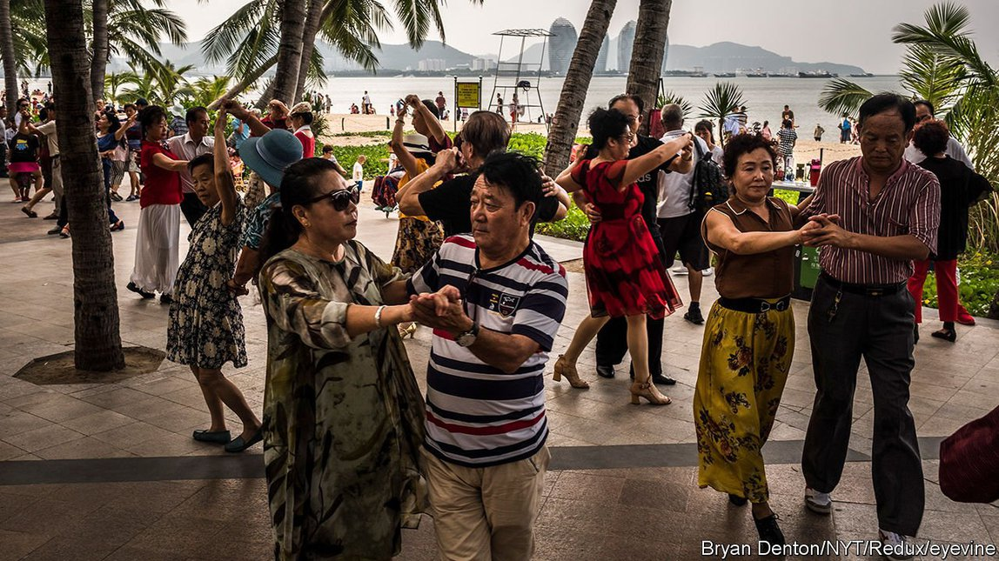

Text
2021-07-04T16:04:09+00:00
Vanguard of the non-working class
不劳动阶级先锋队
不勞動階級先鋒隊
At 54, China’s average retirement age is too low
中国54岁的平均退休年龄过低了
中國54歲的平均退休年齡過低了
The government’s efforts to raise it face stiff opposition
政府提高这一标准的举措面对强烈反对
政府提高這一標準的舉措面對強烈反對
AT ABOUT 54, the average age of retirement in China is among the lowest in the world. This is a problem. Since standards were set, life expectancy has soared while the number of working adults—those whose labour, in effect, supports retirees—has begun to shrink. But persuading people that they should work longer is proving hard. In 2008 the government said it was mulling the idea of raising retirement ages, but backed away amid a public outcry. Now it feels it can wait no longer.
中国的平均退休年龄在54岁左右，为全球最低标准之一。这是个问题。标准是以前设定的，此后预期人均寿命大幅提高，成年劳动力（实际上，他们的劳动撑起了退休人员的生活）的人数却开始缩减。但事实证明，说服人们延长工作年限并不容易。2008年，政府表示在研究提高退休年龄，但在公众的强烈反对中搁置。现在政府感到不能再拖了。
中國的平均退休年齡在54歲左右，為全球最低標準之一。這是個問題。標準是以前設定的，此後預期人均壽命大幅提高，成年勞動力（實際上，他們的勞動撐起了退休人員的生活）的人數卻開始縮減。但事實證明，說服人們延長工作年限並不容易。2008年，政府表示在研究提高退休年齡，但在公眾的強烈反對中擱置。現在政府感到不能再拖了。
The pressure to act is evident. Current retirement ages were set in the 1950s, when the average person was expected to die before reaching that stage. For most men in China the age is 60, much lower than the average of 64.2 in the OECD, a club mostly of rich countries. For female civil servants the age is 55; for blue-collar women it is 50.
采取行动的压力显而易见。目前的退休年龄是在上世纪50年代制定的，当时的预期人均寿命还低于退休年龄。在中国，大多数男性60岁退休，远低于经合组织（成员主要为富裕国家）64.2岁的平均水平。而中国女性公务员55岁退休，女性蓝领工人是50岁。
採取行動的壓力顯而易見。目前的退休年齡是在上世紀50年代制定的，當時的預期人均壽命還低於退休年齡。在中國，大多數男性60歲退休，遠低於經合組織（成員主要為富裕國家）64.2歲的平均水平。而中國女性公務員55歲退休，女性藍領工人是50歲。
Yet life expectancy in China is now just two years short of the OECD average of 79, so a Chinese retiree on a state pension usually needs several more years of support from government funds than his or her rich-world equivalent. In 2019 the public-pension system covered almost 1bn adults, more than any other such scheme in the world. The country’s main pension fund may run out of money by 2035, the Chinese Academy of Social Sciences, an official think-tank, has warned.
但是，现在中国的人均预期寿命只比经合组织79岁的平均水平低两岁，因此中国退休老人通常需要比富裕国家的老人多领几年政府退休金。2019年，中国的公共养老金系统覆盖近10亿成年人，规模大于世界任何其他同类系统。官方智库中国社科院警告称，国家主要的养老基金可能在2035年前耗尽。
但是，現在中國的人均預期壽命只比經合組織79歲的平均水平低兩歲，因此中國退休老人通常需要比富裕國家的老人多領幾年政府退休金。2019年，中國的公共養老金系統覆蓋近10億成年人，規模大於世界任何其他同類系統。官方智庫中國社科院警告稱，國家主要的養老基金可能在2035年前耗盡。
The government appears not yet to have decided how to reform the system. The current five-year economic plan, a 142-page document that was approved in March, contains merely a sentence on the topic, calling for adjustment in “small steps” and “flexible implementation”. But its inclusion means that changes are all but certain to begin before the plan expires in 2025: the government rarely announces a goal that may not be attainable.
政府似乎还没有决定如何改革这一系统。当前的五年规划（今年3月通过的这份文件长142页）关于这个议题只有一句话，提出按“小步调整”和“弹性实施”的原则推进。但加入这句话也就意味着在2025年“十四五”规划结束前几乎肯定会开始改革——中国政府绝少宣布可能无法达成的目标。
政府似乎還沒有決定如何改革這一系統。當前的五年規劃（今年3月通過的這份文件長142頁）關於這個議題只有一句話，提出按“小步調整”和“彈性實施”的原則推進。但加入這句話也就意味着在2025年“十四五”規劃結束前幾乎肯定會開始改革——中國政府絕少宣布可能無法達成的目標。
Officials say retirement ages will be lifted in stages, a few months at a time. China’s main state-run news agency, Xinhua, said two possible approaches were being considered. One would raise the retirement age for both men and women to 65, with the age for women being raised faster so that both reach the end point simultaneously. The other method would involve first raising the retirement age for women to 60, and then both sexes advancing to 65 at the same pace.
官员们透露，退休年龄将分阶段延迟，每次延迟几个月。中国主要官方媒体新华社称，政府目前正在权衡两个可能的方案。一是把男性和女性的退休年龄都提高到65岁，女性的延后速度快于男性，这样就能同时达到新标准。另一个方案是先把女性的退休年龄提高到60岁，再以统一的速度把男女退休年龄提高至65岁。
官員們透露，退休年齡將分階段延遲，每次延遲幾個月。中國主要官方媒體新華社稱，政府目前正在權衡兩個可能的方案。一是把男性和女性的退休年齡都提高到65歲，女性的延後速度快於男性，這樣就能同時達到新標準。另一個方案是先把女性的退休年齡提高到60歲，再以統一的速度把男女退休年齡提高至65歲。
Since the government revealed that the five-year plan would call for older Chinese to work longer, social media have reverberated with debate about the idea. On Weibo, a Twitter-like platform, posts tagged with “postpone the retirement age” have received 620m views and launched more than 100,000 discussions. Many comments have been critical, with some blaming the country’s draconian one-child-per-couple policy for exacerbating the population’s ageing. (The limit was increased to two children in 2016, and will soon be raised again, to three.) In 2020 a survey of 96,000 people by a newspaper in Wuhan found that more than 80% opposed later retirement. They wondered whether they would have the stamina to keep working into their 60s, and also whether—if not in a secure job already—they would still be employable. Firms often discriminate against older people when recruiting.
自政府透露“十四五”规划将推进延迟退休以来，社交媒体上对此热议不断。微博上带“延迟退休年龄”话题的帖子浏览量达6.2亿，引发了超过10万条讨论。许多评论持批评态度，一些人指责中国严厉的独生子女政策加剧了人口老龄化。（2016年一孩限制放松至二孩，很快再次放松至三孩。）2020年，武汉一家报纸对96,000人的调查发现，超过80%的受访者反对延迟退休。他们表示不知道自己60多岁时是否还有足够的精力继续工作，以及是否还找得到工作——如果自己还没有捧着某个铁饭碗的话。年龄歧视在企业招聘中很常见。
自政府透露“十四五”規劃將推進延遲退休以來，社交媒體上對此熱議不斷。微博上帶“延遲退休年齡”話題的帖子瀏覽量達6.2億，引發了超過10萬條討論。許多評論持批評態度，一些人指責中國嚴厲的獨生子女政策加劇了人口老齡化。（2016年一孩限制放鬆至二孩，很快再次放鬆至三孩。）2020年，武漢一家報紙對96,000人的調查發現，超過80%的受訪者反對延遲退休。他們表示不知道自己60多歲時是否還有足夠的精力繼續工作，以及是否還找得到工作——如果自己還沒有捧着某個鐵飯碗的話。年齡歧視在企業招聘中很常見。
Concerns about the possible impact on social stability may explain why the government’s plans have kept slipping. In 2008 it hinted that reforms would begin in 2010. They didn’t. In 2015 a senior official said a detailed plan would be revealed in 2017. Again, no show. The government does not always pay much heed to public opinion when shaping policy: the one-child restriction was never popular. But in this case it may worry about angering a large number of people in urban areas where it is especially keen to prevent unrest (the one-child policy was most resented in the countryside). Most farmers carry on working until they are forced to stop by poor health: a rural pension scheme was introduced in 2009, but it provides far less support than urban residents enjoy.
政府的计划屡屡流产，可能是担心这项改革会冲击社会稳定。2008年，政府暗示改革将于2010年启动。后来并无动静。2015年，一位高官表示详细计划将于2017年公布，结果同样没了下文。政府在制定政策时不是总那么重视民众意见：独生子女政策就从来不受欢迎。但这次，政府可能担心触怒大量城市居民，而城市地区正是政府的维稳重心（对独生子女政策最不满意的是农村地区）。大多数农民反正会一直工作到健康状况不允许为止：虽然政府在2009年推出了农村养老金计划，但提供的支持远低于城市居民享有的水平。
政府的計劃屢屢流產，可能是擔心這項改革會衝擊社會穩定。2008年，政府暗示改革將於2010年啟動。後來並無動靜。2015年，一位高官表示詳細計劃將於2017年公布，結果同樣沒了下文。政府在制定政策時不是總那麼重視民眾意見：獨生子女政策就從來不受歡迎。但這次，政府可能擔心觸怒大量城市居民，而城市地區正是政府的維穩重心（對獨生子女政策最不滿意的是農村地區）。大多數農民反正會一直工作到健康狀況不允許為止：雖然政府在2009年推出了農村養老金計劃，但提供的支持遠低於城市居民享有的水平。
Lifting the retirement age is a bit more popular among government employees. Of almost 170,000 respondents to a survey conducted in 2016 by China Youth Daily, an official newspaper, more than 80% said delaying retirement was more favourable to government employees (presumably because such people are considered less likely to be fired for becoming older and therefore, as is commonly imagined, less energetic). One civil servant told Xinhua his boss had doctored his own records to make his age appear younger. “This way, he holds onto power longer,” the bureaucrat said.
公务员对延迟退休的接受度更高一点。官媒《中国青年报》2016年调查的近17万名受访者中，超过八成人认为延迟退休对公务员更有利，大概是觉得这类人更不可能因为上了年纪（普遍认为年纪大的人会精力不济）而被解雇。一位公务员告诉新华社记者，他的上司就在档案里把年龄改小了。“这样他就可以掌权更久。”他说。
公務員對延遲退休的接受度更高一點。官媒《中國青年報》2016年調查的近17萬名受訪者中，超過八成人認為延遲退休對公務員更有利，大概是覺得這類人更不可能因為上了年紀（普遍認為年紀大的人會精力不濟）而被解僱。一位公務員告訴新華社記者，他的上司就在檔案里把年齡改小了。“這樣他就可以掌權更久。”他說。
But young workers grumble about raising the age. They suspect they will have to wait longer for promotions as older workers occupy jobs for longer. Online, they use a common idiom to describe such seniors, accusing them of “squatting on the toilet without taking a shit”. In reality, lifting the retirement age will be harder on older workers who may struggle to retain their jobs when so many of their younger peers are far better educated. And concerns about job insecurity, especially as they get older, are pushing more young people to apply for jobs in the civil service.
但年轻劳动者对延迟退休怨声载道。他们估计因为老人们迟迟不退，自己就要等更久才能晋升。在网上，他们用一句俗话来形容这些上级，说他们“占着茅坑不拉屎”。在现实中，提高退休年龄对年长员工的影响会更大——面对那么多受教育背景好得多的年轻同事，他们可能难以保住职位。对工作不稳定的担忧，特别是怕上了年纪失业，正促使越来越多年轻人去考公务员。
但年輕勞動者對延遲退休怨聲載道。他們估計因為老人們遲遲不退，自己就要等更久才能晉陞。在網上，他們用一句俗話來形容這些上級，說他們“佔著茅坑不拉屎”。在現實中，提高退休年齡對年長員工的影響會更大——面對那麼多受教育背景好得多的年輕同事，他們可能難以保住職位。對工作不穩定的擔憂，特別是怕上了年紀失業，正促使越來越多年輕人去考公務員。
Raising retirement ages may create another problem. China’s fertility rate (the average number of children a woman can expect to have in her lifetime) is among the world’s lowest. On May 31st the Communist Party said married couples would be allowed to have three children to help the country “cope” with its ageing. (In 2018 the share of people over 60 was almost one-fifth; by 2050 it will be more than one-third.) But many families rely on grandparents for child care. When parents retire, the probability that their child gives birth increases by between 44% and 61%, says a study by Fudan University. If grandparents have to work longer, the government will have to spend more on kindergartens and introduce rules to force employers to make better provisions for working parents. Grappling with China’s demographic woes will involve many tough reforms. ■
提高退休年龄还可能造成另一个问题。中国是全球生育率（一名女性一生中平均生育子女数量）最低的国家之一。5月31日，中国共产党宣布允许每对夫妻生育三名子女，以帮助国家“应对”老龄化问题。（2018年，60岁以上人口占中国总人口的近五分之一；到2050年，这一比例将上升至超过三分之一）。但许多家庭依赖祖父母来照顾小孩。复旦大学的一项研究指出，父母退休后，子女生孩子的可能性会上升44%至61%。如果祖父母一辈必须工作更久，政府将不得不在幼儿园方面投入更多资金，并出台规则要求雇主为在职父母提供更好的支持。中国要应对人口结构困境，将涉及许多艰难的改革。
提高退休年齡還可能造成另一個問題。中國是全球生育率（一名女性一生中平均生育子女數量）最低的國家之一。5月31日，中國共產黨宣布允許每對夫妻生育三名子女，以幫助國家“應對”老齡化問題。（2018年，60歲以上人口佔中國總人口的近五分之一；到2050年，這一比例將上升至超過三分之一）。但許多家庭依賴祖父母來照顧小孩。復旦大學的一項研究指出，父母退休後，子女生孩子的可能性會上升44%至61%。如果祖父母一輩必須工作更久，政府將不得不在幼兒園方面投入更多資金，並出台規則要求僱主為在職父母提供更好的支持。中國要應對人口結構困境，將涉及許多艱難的改革。